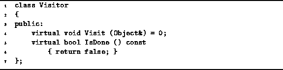

Data Structures and Algorithms
with Object-Oriented Design Patterns in C++
Data Structures and Algorithms
with Object-Oriented Design Patterns in C++
The Container class described in the preceding section
interacts closely with the Visitor class
shown in Program  .
In particular, the Accept member function of the Container
class takes as its lone argument a reference to a Visitor.
.
In particular, the Accept member function of the Container
class takes as its lone argument a reference to a Visitor.

Program: Visitor Class Definition
But what is a visitor?
A shown in Program ,
a visitor is an object that has the two member functions
Visit and IsDone.
Of these, the Visit function is the most interesting.
The Visit function takes as its lone argument a reference
to an Object instance.
The interaction between a container and a visitor goes like this. The container is passed a reference to a visitor by calling the container's Accept member function. I.e., the container ``accepts'' the visitor. What does a container do with a visitor? It calls the Visit member function of that visitor one-by-one for each object contained in the container.
The interaction between a Container and its Visitor are best understood by considering an example. The following code fragment gives the design framework for the implementation of the Accept function in some concrete class, say SomeContainer, which is derived from the abstract base class Container:
void SomeContainer::Accept (Visitor& visitor) constfor each Object i in this container
visitor.Visit (i);
The Accept function calls Visit for each object i in the container. Since the class Visitor is an abstract base class which does not provide an implementation for the Visit operation, what the visitor actually does with an object depends on the type of visitor used.
Suppose that we want to print all of the objects in the container. One way to do this is to create a PrintingVisitor which prints every object it visits, and then to pass the visitor to the container by calling the Accept member function. The following code shows how we can declare the PrintingVisitor class which prints an object on the standard output stream, cout.
class PrintingVisitor : public Visitor
{
public:
void Visit (object& object)
{ cout << object; }
};
Finally, given a container c that is an instance of a concrete container class SomeContainer which is derived from the abstract base class Container, we can call the Accept function as follows:
SomeContainer c; PrintingVisitor v; c.Accept (v);The effect of this call is to call the Visit member function of the visitor for each object in the container.
 Copyright © 1997 by Bruno R. Preiss, P.Eng. All rights reserved.
Copyright © 1997 by Bruno R. Preiss, P.Eng. All rights reserved.